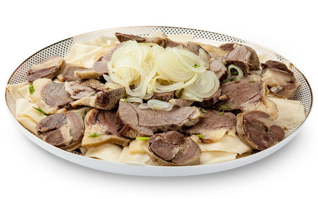

Ет
Қазақша ет (бесбармақ, бешбармақ) асқанда ең алдымен жіліктеп бұзылған етті адам санына қарай мөлшерлейді. Тойға немесе қонақ асыға көбінесе қой сойылады. Қой еті жіліктенгенде 13 мүшеге бөлінеді. Олар жамбас - 2, ортан жілік – 2, асықты жілік – 2, беломыртқа – 1, сүбе – 2 (сүбемен бірге бүйректен жоғарғы 5 қабырға кетеді), қабырға -2, төс – 1, омыртқа -1, жауырын -2, тоқпан жілік – 2, кәрі жілік – 2, бұғана – 1, мойын Осылай асуға дайындалған етті жуып-шайып тазалап, қазанға салады да, ет батып тұратындай етіп суық су құяды. Содан кейін қазанды қатты жанған отқа қойып, сарқылдатып қайнатады, бетіне шыққан қанды көбігін алып тастап, шамалап тұз, 1 бас пияз салып отын басады да, 1-1,5 сағат ет әбден піскенше шымырлатып қайнатады. Ет әбден піскен соң табаққа сорпасынан бөлек қотарып алып, тартылған табақтың санына қарай мөлшерлеп тұздық әзірлейді. Ол үшін сорпаға қара бұрыш, дөңгелектеп тұралған пияз салып, ыдыстың бетін жауып бұқтырып қояды. Ет туралып болған соң тұздықты еттің үстіне құяды. Әдетте кәделі жіліктермен бірге сыйлы қонақтарға малдың басын, (қой), ірі қараның шекесін, қазы, қарта, жал-жаяны табаққа бірге салып береді.Сонымен бірге қамыр, бітеу пісірілген картоп қосуға да болады.
